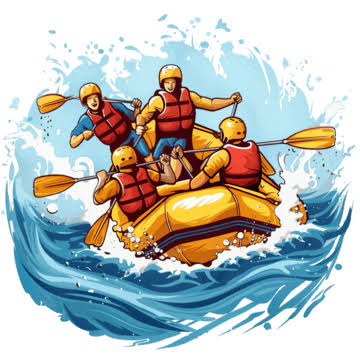
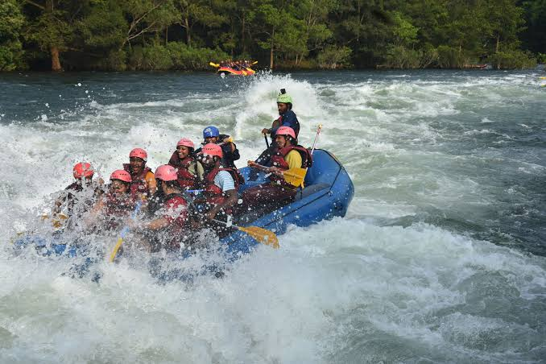
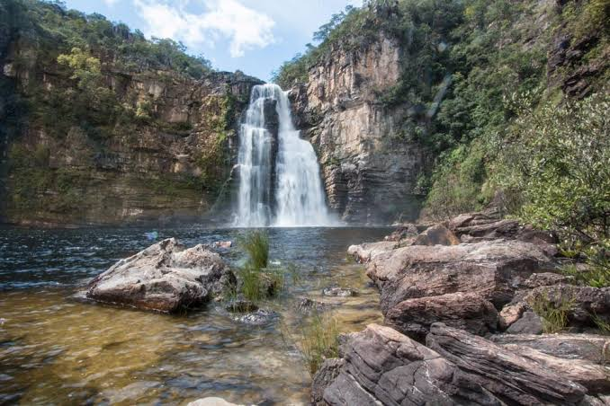
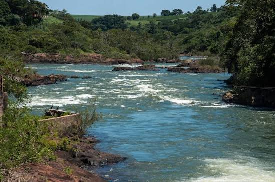
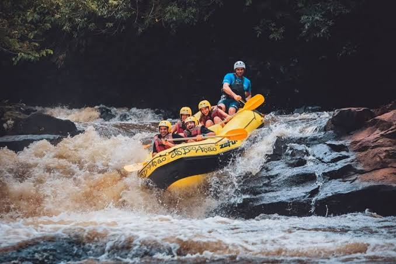
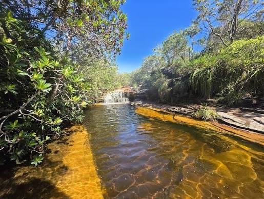
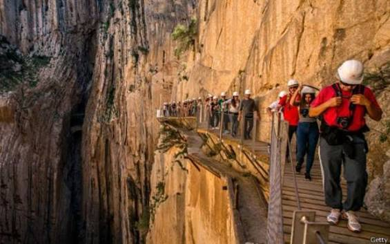

Nossa missão é proporcionar experiências inesquecíveis de aventura na natureza, priorizando sempre a segurança, a diversão e a preservação ambiental em cada descida de rio.


Nossa missão é proporcionar experiências inesquecíveis de aventura na natureza, priorizando sempre a segurança, a diversão e a preservação ambiental em cada descida de rio.
Fundada com a paixão por corredeiras e aventuras ao ar livre, nossa empresa nasceu do sonho de conectar pessoas à natureza de forma emocionante e segura. Ao longo dos anos, expandimos nossas operações e nos tornamos referência em turismo de aventura.




